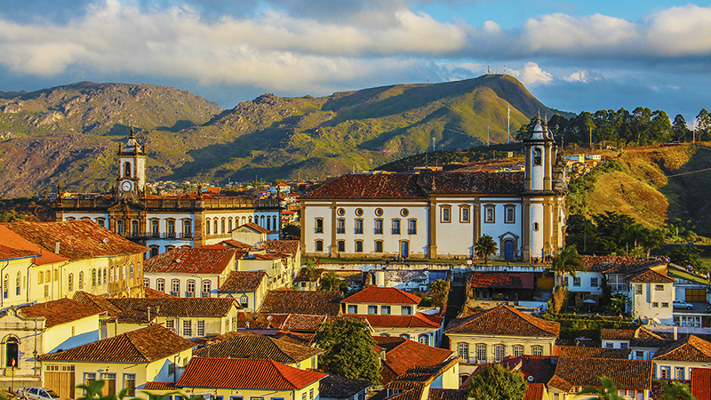

Podróżowanie po Brazylii nigdy nie było łatwiejsze ani bardziej przystępne cenowo. Buser, wiodąca platforma rezerwacji biletów autobusowych w Brazylii, rewolucjonizuje sposób, w jaki ludzie odkrywają ten rozległy i piękny kraj. Niezależnie od tego, czy planujesz weekendowy wyjazd, podróż służbową czy dłuższą przygodę, Buser ułatwia znalezienie i rezerwację idealnej podróży autobusem.
Dzięki intuicyjnej platformie online, konkurencyjnym cenom i trasom łączącym setki miast w całej Brazylii, Buser przekształca podróże autobusowe z konieczności w przyjemną część Twojej przygody. Odkryjmy, jak Buser może pomóc Ci odkryć nowe miejsca i sprawić, że Twoja następna podróż będzie niezapomniana.
Dlaczego Wybrać Buser na Swoje Brazylijskie Przygody
Buser wyróżnia się na brazylijskim rynku transportowym, oferując bezproblemowe doświadczenie rezerwacji połączone z doskonałą wartością. Platforma łączy podróżnych z szeroką siecią operatorów autobusowych, zapewniając, że możesz znaleźć trasy do praktycznie każdego miejsca w Brazylii. Od tętniących życiem obszarów metropolitalnych, takich jak São Paulo i Rio de Janeiro, po urokliwe nadmorskie miasteczka i miasta śródlądowe, Buser ma wszystko, czego potrzebujesz.
Jedną z kluczowych zalet korzystania z Buser jest przejrzystość w zakresie cen i jakości usług. Możesz łatwo porównać różne firmy autobusowe, godziny odjazdu i ceny biletów w jednym miejscu. To oznacza, że nie musisz już dzwonić do wielu dworców autobusowych ani odwiedzać różnych stron internetowych – wszystko, czego potrzebujesz, jest na wyciągnięcie ręki.
Rezerwacja Biletów Autobusowych Buser

Łatwa Rezerwacja Biletów Autobusowych Online
Zarezerwuj swoje bilety autobusowe w kilka minut dzięki przyjaznej dla użytkownika platformie Buser. Porównuj ceny, rozkłady jazdy i udogodnienia wśród wielu operatorów. Bezpieczne opcje płatności i natychmiastowe potwierdzenie sprawiają, że planowanie podróży jest bez wysiłku.
Odkrywanie Różnorodnych Miejsc w Brazylii
Brazylia to kraj o niesamowitej różnorodności, od lasów deszczowych Amazonii po dziewicze plaże, od miast kolonialnych po nowoczesne metropolie. Buser umożliwia odkrywanie wszystkich tych miejsc w przystępnej cenie i komfortowo. Niezależnie od tego, czy interesuje Cię bogactwo kulturalne Salvadoru, naturalne piękno Florianópolis czy żywiołowa energia Brasílii, Buser łączy Cię z setkami miejsc.
Rozległa sieć tras platformy oznacza, że możesz z łatwością planować podróże do wielu miast. Chcesz odwiedzić Rio, potem pojechać do São Paulo i zakończyć w Curitibie? Buser pozwala zarezerwować wszystkie bilety w jednej sesji, co sprawia, że zarządzanie skomplikowanymi trasami jest proste.
Popularne Trasy Buser
- São Paulo do Rio de Janeiro: Jedna z najpopularniejszych tras w Brazylii, łącząca dwa główne miasta z częstymi odjazdami.
- Rio do Florianópolis: Idealne dla miłośników plaży poszukujących pięknego południowego wybrzeża Brazylii.
- Brasília do Belo Horizonte: Odkryj wnętrze Brazylii dzięki wygodnym podróżom nocnym.
- Salvador do Recife: Odkryj bogatą kulturę i historię regionu północno-wschodniego Brazylii.
- Curitiba do Foz do Iguaçu: Podróż do jednego z najbardziej spektakularnych wodospadów na świecie.
Komfort i Wygoda w Każdej Podróży
Nowoczesne podróże autobusowe w Brazylii znacznie się rozwinęły, a Buser współpracuje z operatorami, którzy stawiają na komfort pasażerów. Wiele autobusów oferuje rozkładane fotele, klimatyzację, Wi-Fi na pokładzie i systemy rozrywki. W przypadku dłuższych podróży możesz wybierać spośród opcji półleżących lub całkowicie leżących, zapewniając przybycie do miejsca docelowego wypoczętym.
Platforma Buser zapewnia szczegółowe informacje o każdej usłudze autobusowej, w tym konfigurację miejsc, udogodnienia i czas podróży. Ta przejrzystość pomaga w podejmowaniu świadomych decyzji i zapewnia, że Twoje doświadczenie podróży spełnia oczekiwania.
Opcje Podróży Premium

Luksusowe Usługi Autobusowe
Ulepsz do usług premium z ekstra szerokimi miejscami, osobistymi ekranami rozrywki, portami USB do ładowania i darmowymi przekąskami. Idealne do podróży na długie dystanse, gdzie komfort ma największe znaczenie.
Inteligentne Funkcje Rezerwacji
Platforma Buser jest zaprojektowana z myślą o nowoczesnym podróżniku. Przyjazna dla urządzeń mobilnych strona internetowa i aplikacja ułatwiają rezerwację biletów w podróży. Możesz wyszukiwać trasy według miejsca docelowego, daty lub ceny i filtrować wyniki zgodnie ze swoimi preferencjami. Dostępność w czasie rzeczywistym zapewnia, że widzisz tylko bilety, które są rzeczywiście dostępne.
Wskazówki Rezerwacyjne dla Najlepszego Doświadczenia
- Rezerwuj Z Wyprzedzeniem: Zabezpiecz lepsze ceny i wybór miejsc, rezerwując wcześnie, zwłaszcza na popularne trasy i święta.
- Porównuj Opcje: Użyj funkcji porównywania Buser, aby znaleźć najlepszą równowagę między ceną, rozkładem jazdy i komfortem.
- Sprawdź Udogodnienia: Przejrzyj, co jest wliczone w każdy bilet – Wi-Fi, posiłki i rozrywka mogą poprawić Twoją podróż.
- Elastyczne Daty: Jeśli Twoje daty podróży są elastyczne, sprawdź różne dni, aby znaleźć najlepsze oferty.
- Aplikacja Mobilna: Pobierz aplikację Buser, aby łatwo uzyskać dostęp do swoich biletów i rezerwacji w ostatniej chwili.
Bezpieczeństwo i Niezawodność
Podczas podróży autobusem bezpieczeństwo i niezawodność są najważniejsze. Buser współpracuje wyłącznie z licencjonowanymi i certyfikowanymi operatorami autobusowymi, którzy spełniają brazylijskie standardy bezpieczeństwa transportu. Wszystkie firmy partnerskie przechodzą regularne kontrole i utrzymują swoje floty na najwyższym poziomie.
Platforma zapewnia również obsługę klienta, aby pomóc w przypadku jakichkolwiek problemów, które mogą wystąpić przed, podczas lub po podróży. Niezależnie od tego, czy musisz zmienić bilet, masz pytania dotyczące trasy czy potrzebujesz pomocy przy rezerwacji, zespół wsparcia Buser jest gotowy pomóc.
Rozpocznij Swoją Przygodę Dziś
Buser przekształcił podróże autobusowe w Brazylii, czyniąc je bardziej dostępnymi, przystępnymi cenowo i przyjemnymi niż kiedykolwiek wcześniej. Dzięki rozległej sieci tras, konkurencyjnym cenom i przyjaznej dla użytkownika platformie, Buser usuwa bariery, które kiedyś czyniły podróże autobusowe skomplikowanymi.
Niezależnie od tego, czy jesteś oszczędnym backpackerem, podróżującym służbowo czy kimś, kto chce odkryć niesamowitą różnorodność Brazylii, Buser zapewnia narzędzia i opcje, których potrzebujesz. Twoja następna przygoda naprawdę zaczyna się od biletu Buser – więc czemu czekać? Zacznij planować swoją podróż już dziś i odkryj piękno, kulturę i ekscytację, które oferuje Brazylia.